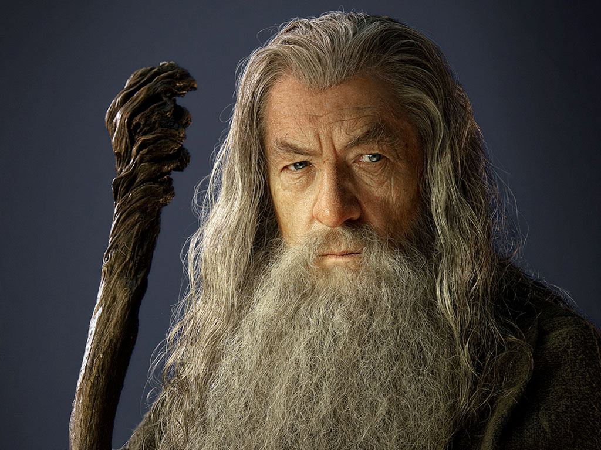

Гэндальф Серый
Гэ́ндальф Се́рый/Бе́лый (англ. Gandalf the Grey/White; вариант перевода — Гандалв) — один из центральных персонажей произведений Дж. Р. Р. Толкина «Властелин колец» и «Хоббит, или Туда и обратно», где он предстаёт мудрым, могучим волшебником, состоящим в Совете Мудрых и помогающим слабым.
По своей природе происходит из расы Айнур и причисляется к малым (по могуществу) ангельским духам — Майар, в чине которых почитался наимудрейшим. Его миссия, возложенная на него Валар, заключалась в помощи Свободным народам Средиземья в борьбе против Тёмного Властелина Саурона, одного из могущественных Майар, обратившихся к злу. Гэндальфу единственному из числа посланников-Истари удалось справиться с задачей, и в конце Третьей Эпохи он вернулся в Бессмертные Земли.
Гэндальф Серый, 2941 год Т.Э.
Внешность
Гэндальф был сгорбленным от старости, крепкого телосложения, широкоплечим, но ниже среднего мужского роста. У него были длинные, убелённые сединой волосы, серебристая борода, густые белоснежные брови, тёмные глаза. В согбенном состоянии его рост был примерно 168 см. Одет он был в остроконечную широкополую синюю шляпу, длинный серый плащ, серебристый шарф и огромные чёрные сапоги. Также у Гэндальфа был посох, на который он опирался.
Способности
Гэндальф владеет кольцом огня Нарья, одним из Трёх Колец эльфов, и большинство его магических способностей связаны именно с огнём и светом. Он говорит о себе: «Я служитель тайного огня, повелитель пламени Анора…». В гостях у Бильбо Гэндальф курил трубку и управлял кольцами табачного дыма: они пролетали через кольца Торина, после чего становились зелёными, возвращались к волшебнику и парили над его головой. Когда гоблины атаковали отряд Торина Дубощита во время ночлега в пещере, Гэндальфу удалось ускользнуть, убив молнией несколько гоблинов, а спасая отряд, он создал вспышку ослепительного света, оставившую после себя запах пороха и убившую несколько врагов. В пещере он потушил все огни и вызвал из костра столб раскаленного синего дыма, разбрасывавшего белые искры, прожигавшие гоблинов насквозь. Когда варги окружили отряд и загнали на деревья, волшебник зажигал своим посохом сосновые шишки, которые загорались магическим разноцветных огнём, голубым, красным и зелёным, взрывались и искрились, и бросал их в волков. В Шире широко известна изредка устраиваемая Гендальфом «огненная потеха» — фейерверки, созданные, очевидно, не без толики волшебства.
Битва Гэндальфа против Балрога, 3019 год Т.Э.